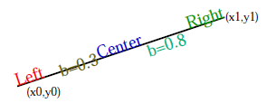

| Safe Haskell | None |
|---|
Libraries.Render
Contents
Description
This module provides efficient functions for rendering vector graphics to a number of formats, including EPS, PostScript, and PDF. It provides an abstraction for multi-page documents, as well as a set of graphics primitives for page descriptions.
The graphics model is similar to that of the PostScript and PDF languages, but we only implement a subset of their functionality. Care has been taken that graphics rendering is done efficiently and as lazily as possible; documents are rendered "on the fly", without the need to store the whole document in memory.
The provided document description model consists of two separate layers of abstraction:
- type X = Double
- type Y = Double
- data Color
- data Basefont
- = TimesRoman
- | Helvetica
- data Font = Font Basefont Double
- nominalsize :: Font -> Double
- text_width :: Font -> String -> Double
- type Alignment = Double
- align_left :: Alignment
- align_center :: Alignment
- align_right :: Alignment
- data Document a
- newpage :: X -> Y -> Draw a -> Document a
- newpage_defer :: Draw (X, Y, a) -> Document a
- endpage :: X -> Y -> Draw (X, Y, ())
- data Draw a
- newpath :: Draw ()
- moveto :: X -> Y -> Draw ()
- lineto :: X -> Y -> Draw ()
- curveto :: X -> Y -> X -> Y -> X -> Y -> Draw ()
- closepath :: Draw ()
- arc :: X -> Y -> Double -> Double -> Double -> Draw ()
- arc_append :: X -> Y -> Double -> Double -> Double -> Draw ()
- oval :: X -> Y -> X -> Y -> Draw ()
- rectangle :: X -> Y -> X -> Y -> Draw ()
- stroke :: Draw ()
- fill :: Color -> Draw ()
- fillstroke :: Color -> Draw ()
- textbox :: Alignment -> Font -> Color -> X -> Y -> X -> Y -> Double -> String -> Draw ()
- setlinewidth :: Double -> Draw ()
- setcolor :: Color -> Draw ()
- translate :: X -> Y -> Draw ()
- scale :: X -> Y -> Draw ()
- comment :: String -> Draw ()
- block :: Draw a -> Draw a
- data RenderFormat
- = Format_PS
- | Format_PDF
- | Format_EPS Integer
- | Format_Debug
- render_stdout :: RenderFormat -> Document a -> IO a
- render_file :: Handle -> RenderFormat -> Document a -> IO a
- render_string :: RenderFormat -> Document a -> String
- draw_subroutine :: [CustomDef] -> Draw () -> Draw ()
- custom_ps :: String -> CustomDef
- custom_pdf :: String -> CustomDef
- custom_ascii :: String -> CustomDef
- data Custom = Custom {}
- custom :: Custom
- render_custom_stdout :: RenderFormat -> Custom -> Document a -> IO a
- render_custom_file :: Handle -> RenderFormat -> Custom -> Document a -> IO a
- render_custom_string :: RenderFormat -> Custom -> Document a -> String
Types
Coordinates
Color
The type of colors.
Fonts
A enumeration type for base fonts. For the time being, we only offer TimesRoman and Helvetica.
Constructors
| TimesRoman | |
| Helvetica |
A data type describing a scaled font. This consists of a base font and a point size.
nominalsize :: Font -> DoubleSource
Return the nominal point size of a font.
text_width :: Font -> String -> DoubleSource
Return the width of the given string in the given font.
Alignment
A real number representing text alignment. 0 = left aligned, 0.5 = centered, 1 = right aligned. Intermediate values are also possible. For example, an alignment value of 0.25 means one quarter of the way between left aligned and right aligned.
Left alignment.
align_center :: AlignmentSource
Centered alignment.
align_right :: AlignmentSource
Right alignment.
The Document monad
Document description takes place in the Document monad. A basic
multi-page document has the following structure:
document :: Document ()
document = do
newpage x y $ do
<<<drawing commands>>>
newpage x y $ do
<<<drawing commands>>>
...
Here, each newpage command describes one page of the
document. The parameters x and y specify the dimensions of the
page bounding box. They are expressed in units of PostScript
points, i.e., multiples of 1/72 inch.
Sometimes the bounding box for a page is not known until after the
page content has been generated. For this purpose, we also provide
the following alternative to the newpage command:
newpage_defer $ do
<<<drawing commands>>>
endpage x y
It works just like the newpage command, except that the bounding
box is given at the end.
newpage :: X -> Y -> Draw a -> Document aSource
Create a page of the given bounding box, containing the given drawing.
newpage_defer :: Draw (X, Y, a) -> Document aSource
Create a page containing the given drawing, with the bounding box computed at the end of the drawing routines.
The Draw monad
The description of the visible content of a page take place in the
Draw monad. It takes the form of a sequence of drawing commands,
for example:
moveto 10 10
lineto 10 100
lineto 100 100
lineto 100 10
closepath
stroke
The graphics model is similar to that of the PostScript and PDF languages. The basic concept is that of a path, which is a sequence of straight and curved line segments. Paths are first constructed using path construction commands, and then painted using painting commands, depending on a set of current graphics parameters and a current coordinate system.
We also provide block structure. Changes to the graphics state (color, coordinate system, etc.) that are done within a block are local to the block.
block $ do
<<drawing commands>>
Path construction commands
During path construction, there is a notion of current path and current point. A path may consist of zero or more connected subpaths, and each subpath is either open or closed.
moveto :: X -> Y -> Draw ()Source
Start a new subpath at (x,y). The point (x,y) becomes the current point.
lineto :: X -> Y -> Draw ()Source
Extend the current subpath by a straight line segment from the current point to (x,y). The point (x,y) becomes the current point.
curveto :: X -> Y -> X -> Y -> X -> Y -> Draw ()Source
curveto x1 y1 x2 y2 x y
Close the current subpath. If necessary, connect the subpath's final and initial points by a straight line segment. Note that a closed path is rendered differently than a non-closed path whose initial and final points coincide, because in the latter case, the endpoints are capped rather than mitered.
arc :: X -> Y -> Double -> Double -> Double -> Draw ()Source
Start a new subpath consisting of a circular arc segment. The arc segment is centered at (x,y), has radius r, and extends from angle a1 to angle a2, measured in degrees, counterclockwise from the x-axis. The arc is drawn clockwise if a2 ≥ a1, and counterclockwise otherwise. The final point becomes the new current point.
arc_append :: X -> Y -> Double -> Double -> Double -> Draw ()Source
Like arc, except append to the current subpath. If necessary,
add a straight line segment from the current point to the starting
point of the arc.
oval :: X -> Y -> X -> Y -> Draw ()Source
Append a new closed subpath consisting of an oval centered at (x,y), with horizontal and vertical radii rx and ry, respectively.
rectangle :: X -> Y -> X -> Y -> Draw ()Source
rectangle x y w h
Painting commands
Stroke the current path, using the current line color, line width, and other graphics parameters. This operation implicitly resets the current path to empty.
fill :: Color -> Draw ()Source
Fill the current path, using the given color. This operation implicitly resets the current path to empty.
fillstroke :: Color -> Draw ()Source
Fill the current path, using the given color; also stroke the path using the current line color. This operation implicitly resets the current path to empty.
Text commands
textbox :: Alignment -> Font -> Color -> X -> Y -> X -> Y -> Double -> String -> Draw ()Source
textbox a f c x0 y0 x1 y1 b s

Graphics parameters
The painting commands rely on a set of graphics parameters. The graphics parameters are initially set to default values, and can be altered with the following commands.
setlinewidth :: Double -> Draw ()Source
Set the line width. The initial line width is 1.
setcolor :: Color -> Draw ()Source
Set the current color for stroking. The initial stroke color is black.
Coordinate system
Coordinates, lengths, widths, etc, are all interpreted relative to a current coordinate system. The initial coordinate system of each page has the origin in the lower left corner, with each unit equaling one PostScript point (1/72 inch). The following commands can be used to change the current coordinate system.
scale :: X -> Y -> Draw ()Source
Scale the current coordinate system by (s,t). Here, s is the scaling factor in the x-direction, and t is the scaling factor in the y-direction.
Comments
comment :: String -> Draw ()Source
Insert a human-readable comment in the content stream. This is for information only, and is not rendered in the graphical output.
Block structure
Drawing operations can be grouped into blocks with the block
operator. Changes to the graphics parameters and coordinate system
are local to the block. It is undefined whether changes to the
current path made within a block persist after the end of the block
(they do in PDF, but not in PostScript). Therefore, path
construction should not be broken up across end-of-block boundaries.
block :: Draw a -> Draw aSource
Perform a block of commands in a local copy of the graphics state. This is intended to be used like this:
block $ do
<<drawing commands>>
Backends
The following commands can be used to render documents to various available formats. The available formats are PostScript, PDF, EPS, and an ASCII-based debugging format. Output can be written to standard output, to a file, or to a string.
data RenderFormat Source
Available graphics formats for rendering.
Constructors
| Format_PS | PostScript. |
| Format_PDF | Portable Document Format. |
| Format_EPS Integer | Encapsulated PostScript. The integer argument specifies which single page to extract from the document. |
| Format_Debug | An ASCII-based debugging format. |
Instances
render_stdout :: RenderFormat -> Document a -> IO aSource
Render a document to standard output, using the given output format.
render_file :: Handle -> RenderFormat -> Document a -> IO aSource
Render a document to a file, using the given output format.
render_string :: RenderFormat -> Document a -> StringSource
Render a document to a string, using the given output format.
Customization
The document and drawing abstractions provided by this module are purposely kept general-purpose, and do not include application-specific features. However, we provide a mechanism by which applications can provide customized drawing commands and other custom features.
Custom drawing commands
It is sometimes useful to use customized drawing commands. For
example, an application that draws many rectangles might like to
define a custom rectangle function for appending a rectangle to
the current path. Of course this can be defined as an ordinary
Haskell function, using elementary drawing commands:
my_rect :: X -> Y -> X -> Y -> Draw () my_rect x0 y0 x1 y1 = do moveto x0 y0 lineto x0 y1 lineto x1 y1 lineto x1 y0 closepath
However, sometimes it is nice to make use of specialized abilities of individual backends. For example, PDF already has a built-in rectangle drawing command, and PostScript has the ability to define custom subroutines within the document text. Using these features can decrease the size of the generated documents.
We therefore provide a facility for defining new drawing commands
with backend-specific implementations. For example, a more general
version of the above my_rect function can be defined as
follows:
my_rect :: X -> Y -> X -> Y -> Draw ()
my_rect x0 y0 x1 y1 = draw_subroutine alt $ do
moveto x0 y0
lineto x0 y1
lineto x1 y1
lineto x1 y0
closepath
where
alt = [
custom_ps $ printf "%f %f %f %f rect\n" x0 y0 x1 y1,
custom_pdf $ printf "%f %f %f %f re\n" x0 y0 (x1-x0) (y1-y0),
custom_ascii $ printf "My_rect %f %f %f %f\n" x0 y0 x1 y1
]
The idea is to provide a default definition in terms of primitive
drawing commands, as well as a list of various backend specific
definitions. In the case of PostScript subroutines, the PostScript
file must then also be supplied with a definition for the rect
subroutine, which can be done with the command render_ps_custom:
my_ps_defs = "/rect { ... } bind def\n"
my_render_ps = render_ps_custom custom { ps_defs = my_ps_defs }
Note that the draw_subroutine customization mechanism is entirely
optional. Its purpose is to generate shorter output for some
backends; if it is omitted, the file may be be longer but should
look the same.
draw_subroutine :: [CustomDef] -> Draw () -> Draw ()Source
Create a new subroutine.
custom_pdf :: String -> CustomDefSource
Define a custom PDF definition.
custom_ascii :: String -> CustomDefSource
Define a custom ASCII definition.
Customization interface
A data structure that holds application-specific meta-data and customization information.
An empty customization structure. Customizations should be
specified by modifying custom, for example:
custom { creator = "MyApp 1.0" }
Customized rendering functions
The following are versions of the generic rendering functions that also take a customization data structure as an additional parameter.
render_custom_stdout :: RenderFormat -> Custom -> Document a -> IO aSource
Render a document to standard output, using the given output format and customization data structure.
render_custom_file :: Handle -> RenderFormat -> Custom -> Document a -> IO aSource
Render a document to a file, using the given output format and customization data structure.
render_custom_string :: RenderFormat -> Custom -> Document a -> StringSource
Render a document to a string, using the given output format and customization data structure.